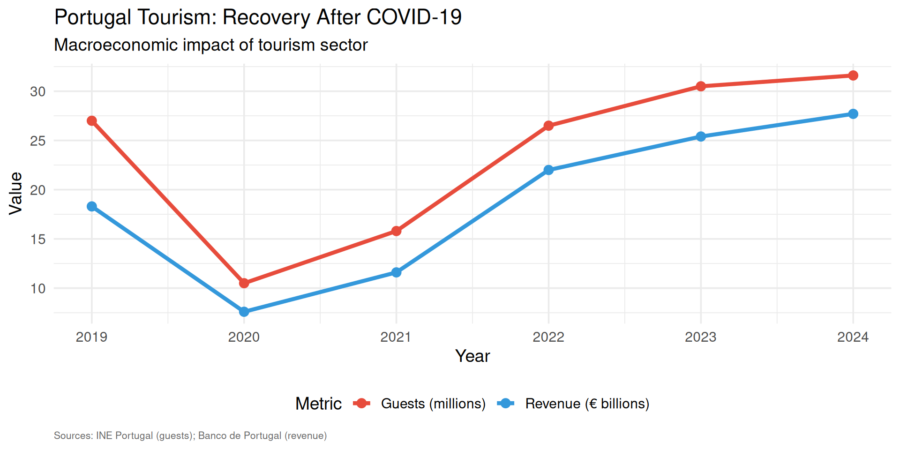

Economics Fundamentals
Lecture 4: Production Factors & Production Possibilities Frontier
Paulo Fagandini
today
Welcome to Economics!
Why study Economics?
- Understand government policies
- Navigate global markets
- Achieve business success
- Master supply & demand
- Understand inequality

What is Economics?
Economics studies how societies use scarce resources to produce valuable goods and distribute them among individuals
What is Economics?
Key aspects Economics addresses:
- How institutions and technology influence prices and resource allocation
- Behavior of financial markets and capital allocation
- Income redistribution and social welfare
- Economic cycles: unemployment and inflation
- International trade and globalization effects
- Economic growth in developing countries
The Two Branches of Economics
Macroeconomics
The Big Picture
- Unemployment rates
- Inflation trends
- Budget deficits
- Economic growth
- International trade
Focus: Entire economy
Microeconomics
Individual Decisions
- Specific markets
- Consumer behavior
- Firm decisions
- Pricing strategies
- Competition analysis
Focus: Individual agents
Macroeconomics in Tourism
Source: INE Portugal, 2025
Microeconomics in Tourism

Source: STR Europe, 2024
The Fundamental Economic Problem
Scarcity
Human wants are unlimited, but resources are limited
The Principle of Scarcity: Having more of one good usually means having less of another
The Fundamental Economic Problem
This leads to:
- Trade-offs: Choices involve compromises
- Cost-Benefit Analysis: Action taken only if benefits exceed costs
- Efficiency: Most effective use of society’s resources
Scarcity in Tourism: Real Example
Lisbon Airport Capacity Constraints (2024)
- Capacity: ~31M passengers/year
- 2024: ~35M passengers
- Growing demand but limited slots
- Trade-off: More flights vs. congestion
Efficiency
Economic Efficiency
Situation where the economy produces and consumes goods at socially optimal levels:
- Getting the most out the available resources
- Using the least for the current level of consumption
Efficiency
Characteristics:
- Cannot increase one person’s welfare without harming another (This is known as Pareto Efficiency)
- Resources used in most effective way
- Society operates on Production Possibilities Frontier (PPF) (forthcoming)
Efficiency
In Tourism Context:
- Optimal allocation of hotel rooms
- Efficient pricing of airline tickets
- Balanced distribution of tourists across destinations
Efficiency vs. Inefficiency

The Three Economic Questions
Every economy must answer:
1. WHAT?
What goods to produce and in what quantity?
Tourism example: More hotels or more museums?
2. HOW?
How should goods be produced?
Tourism example: Automated booking or human agents?
3. FOR WHOM?
Who enjoys the goods produced?
Tourism example: Luxury tourism or mass tourism?
These questions require economic decisions based on:
- Available resources
- Technology
- Social preferences
- Market mechanisms
Positive vs. Normative Economics
Two different ways in which we can approach Economics.
Positive Economics
Describes facts
Questions:
- Why do hotel managers earn more than cleaners?
- Does tourism increase local incomes?
- What happens to prices during high season?
→ Can be answered with data and analysis
Normative Economics
Involves value judgments
Questions:
- Should government limit Airbnb rentals?
- Should tourism revenue be redistributed?
- Should airlines be forced to reduce emissions?
→ Requires ethical and political debate
Summary: Key Concepts
- Economics studies how societies allocate scarce resources
- Macroeconomics focuses on the entire economy (GDP, inflation, unemployment)
- Microeconomics focuses on individual decisions (firms, consumers, markets)
- Scarcity means unlimited wants with limited resources
- Efficiency means optimal use of resources (no waste)
- Three Questions: WHAT, HOW, FOR WHOM
- Positive vs. Normative analysis
Exercises
Time for practice!
Let’s test your understanding with some questions.
Exercise 1: Multiple Choice
Question: Which of the following is a macroeconomic question related to tourism?
A. How should a hotel set its room prices?
B. Why did Portugal’s tourism revenue fall in 2020?
C. Should a restaurant hire more waiters?
D. How do travelers choose between two airlines?
Answer: B
Explanation: Portugal’s overall tourism revenue is an aggregate measure affecting the entire economy (macroeconomic). The others focus on individual firms/consumers (microeconomic).
Exercise 2: Multiple Choice
Question: A museum in Lisbon has limited exhibition space. It must choose between hosting a modern art exhibition or a historical artifacts exhibition. This situation illustrates:
A. Efficiency
B. Scarcity
C. Positive economics
D. Macroeconomics
Answer: B
Explanation: Limited space (scarce resource) forces a choice between alternatives. This is the fundamental problem of scarcity.
Exercise 3: Open Question
Scenario: A low-cost airline operates flights between Lisbon and Paris. Currently, they charge €50 per ticket and sell 150 tickets per flight (capacity: 180 seats).
Questions:
- Calculate current revenue per flight
- If they increase price to €60, demand falls to 120 tickets. Calculate new revenue.
- Which pricing is more efficient? Why?
- Is this a microeconomic or macroeconomic analysis?
Exercise 3: Solution
a) Current revenue:
\[\text{Revenue} = \text{Price} \times \text{Quantity} = 50 \times 150 = €7,500\]
b) New revenue at higher price:
\[\text{Revenue} = 60 \times 120 = €7,200\]
c) Efficiency analysis:
- First scenario (€50): Revenue €7,500, occupancy 83% (150/180)
- Second scenario (€60): Revenue €7,200, occupancy 67% (120/180)
The first scenario is more efficient: higher revenue AND better resource utilization (more seats filled).
d) This is microeconomic analysis (focuses on individual firm’s pricing decision).
Next Lecture
Lecture 2 (February 6, 2026):
- Three Fundamental Economic Problems (detailed)
- Market, Centralized, and Mixed Economies
- Economic Systems Comparison
Preparation: Think about how tourism businesses make decisions in different economic systems!
Thank You!
Questions?
Contact: paulo.fagandini@ext.universidadeeuropeia.pt
Next class: Thursday, February 6, 2026
Recap: Lecture 1
Key concepts we covered:
- Economics studies scarcity and efficiency
- Macroeconomics (big picture) vs. Microeconomics (individual decisions)
- Three fundamental questions: WHAT, HOW, FOR WHOM
- Positive (facts) vs. Normative (values) economics
Today: How do different economic systems answer these questions?
The Three Fundamental Economic Problems
Every society must solve:
- WHAT goods and services to produce?
- Which products? How much of each?
- Current consumption vs. future investment?
- HOW to produce them?
- Which technologies? Which resources?
- Labor-intensive vs. capital-intensive?
- FOR WHOM are goods produced?
- How to distribute output?
- Who gets what share of production?
Problem 1: WHAT to Produce?
Tourism Example: Portugal 2024
#| echo: false
#| warning: false
#| fig-width: 10
#| fig-height: 5
library(ggplot2)
library(dplyr)
# Tourism infrastructure investment allocation
investment_data <- data.frame(
category = c("Hotels", "Restaurants", "Museums", "Transport", "Beach Facilities"),
investment_2024 = c(450, 280, 120, 380, 150),
visitors_impact = c(850, 720, 280, 900, 420)
)
investment_data$category <- factor(investment_data$category,
levels = investment_data$category[order(investment_data$investment_2024)])
ggplot(investment_data, aes(x = category, y = investment_2024, fill = category)) +
geom_bar(stat = "identity") +
coord_flip() +
labs(title = "Tourism Infrastructure Investment in Portugal (2024)",
subtitle = "WHAT to produce: Allocation decisions (€ millions)",
x = "",
y = "Investment (€ millions)") +
theme_minimal(base_size = 14) +
scale_fill_brewer(palette = "Set3") +
theme(legend.position = "none") +
geom_text(aes(label = paste0("€", investment_2024, "M")),
hjust = -0.1, size = 4)Problem 2: HOW to Produce?
Different Production Methods: Hotel Check-in
Traditional Method
- Human receptionists
- Paper forms
- Phone bookings
- High labor cost
- Flexible service
- Personal touch
Cost per check-in: ~€8-12
Automated Method
- Self-service kiosks
- Online booking
- Mobile check-in
- High capital cost
- 24/7 availability
- Limited flexibility
Cost per check-in: ~€2-4
Decision factors: Initial investment, labor costs, customer preferences, technology reliability
HOW: Production Cost Comparison
#| echo: false
#| warning: false
#| fig-width: 10
#| fig-height: 5
# Cost comparison over time
years <- 1:5
traditional_cost <- 10 * 10000 * years # €10 per check-in, 10k check-ins/year
automated_cost <- 200000 + (3 * 10000 * years) # €200k initial + €3 per check-in
cost_data <- data.frame(
year = rep(years, 2),
cost = c(traditional_cost, automated_cost) / 1000, # Convert to thousands
method = rep(c("Traditional", "Automated"), each = 5)
)
ggplot(cost_data, aes(x = year, y = cost, color = method, group = method)) +
geom_line(size = 1.5) +
geom_point(size = 3) +
labs(title = "Cumulative Cost: Traditional vs. Automated Check-in",
subtitle = "HOW to produce: Technology choice affects long-term costs",
x = "Years of Operation",
y = "Cumulative Cost (€ thousands)",
color = "Method") +
theme_minimal(base_size = 14) +
scale_color_manual(values = c("Traditional" = "#e74c3c",
"Automated" = "#3498db")) +
theme(legend.position = "bottom") +
geom_vline(xintercept = 2.86, linetype = "dashed", alpha = 0.5) +
annotate("text", x = 3.2, y = 200,
label = "Break-even point", angle = 90, size = 4)Problem 3: FOR WHOM?
Income Distribution & Tourism Access
#| echo: false
#| warning: false
#| fig-width: 10
#| fig-height: 5
# Tourism spending by income quintile
income_tourism <- data.frame(
quintile = c("Lowest 20%", "Second 20%", "Third 20%", "Fourth 20%", "Highest 20%"),
avg_vacation_spending = c(450, 950, 1650, 2800, 5200),
trips_per_year = c(0.3, 0.8, 1.4, 2.1, 3.5)
)
income_tourism$quintile <- factor(income_tourism$quintile,
levels = income_tourism$quintile)
ggplot(income_tourism, aes(x = quintile, y = avg_vacation_spending, fill = quintile)) +
geom_bar(stat = "identity") +
labs(title = "Average Annual Vacation Spending by Income Group (EU 2024)",
subtitle = "FOR WHOM: Income distribution determines who consumes tourism",
x = "Income Quintile",
y = "Average Spending (€)") +
theme_minimal(base_size = 14) +
scale_fill_brewer(palette = "RdYlGn", direction = 1) +
theme(legend.position = "none",
axis.text.x = element_text(angle = 25, hjust = 1)) +
geom_text(aes(label = paste0("€", avg_vacation_spending)),
vjust = -0.5, size = 4)Economic Systems: Overview
Three fundamental ways to organize an economy:
- Market Economy (Laissez-faire)
- Decisions by individuals and firms
- Prices and markets coordinate
- Centrally Planned Economy
- Government makes decisions
- Central authority coordinates
- Mixed Economy (Most common today)
- Combination of market and government
- Balance varies by country
Market Economy
Definition: Individuals and companies make key production and consumption decisions through markets
Key Features:
- Private ownership of resources
- Price mechanism coordinates decisions
- Profit motive drives production
- Competition among firms
- Consumer sovereignty (monetary votes)
Tourism Example: Hotel chains decide what to build, where, and at what price based on profit expectations
How Markets Work: Example
Airbnb in Lisbon (Market Mechanism)
#| echo: false
#| warning: false
#| fig-width: 10
#| fig-height: 5
# Supply and demand for Airbnb rentals
library(tidyr)
# Price points
prices <- seq(20, 120, by = 10)
# Demand: higher price -> lower quantity
quantity_demanded <- 5000 - 30 * prices
# Supply: higher price -> higher quantity
quantity_supplied <- -1000 + 40 * prices
market_data <- data.frame(
price = rep(prices, 2),
quantity = c(quantity_demanded, quantity_supplied),
curve = rep(c("Demand", "Supply"), each = length(prices))
)
ggplot(market_data, aes(x = quantity, y = price, color = curve)) +
geom_line(size = 1.5) +
geom_point(size = 3) +
labs(title = "Airbnb Market in Lisbon: Supply and Demand",
subtitle = "Market economy: Prices coordinate decisions",
x = "Number of Listings",
y = "Average Price per Night (€)",
color = "") +
theme_minimal(base_size = 14) +
scale_color_manual(values = c("Demand" = "#e74c3c", "Supply" = "#27ae60")) +
theme(legend.position = "bottom") +
geom_vline(xintercept = 2200, linetype = "dashed", alpha = 0.3) +
geom_hline(yintercept = 86, linetype = "dashed", alpha = 0.3) +
annotate("point", x = 2200, y = 86, size = 5, color = "#f39c12") +
annotate("text", x = 2200, y = 95,
label = "Equilibrium\nP=€86, Q=2,200", size = 4)Centrally Planned Economy
Definition: Government makes most production and distribution decisions
Key Features:
- Government ownership of resources
- Central planning replaces markets
- Production quotas set by authority
- Price controls by government
- Administrative allocation of resources
Historical Example: Soviet tourism industry (state-owned hotels, fixed prices, limited choice)
Modern Examples: Cuba, North Korea (though moving toward mixed systems)
Market vs. Centralized: Tourism Example
Market System
Hotel Construction Decision:
✓ Private investor analyzes demand
✓ Builds if profitable
✓ Price determined by market
✓ Competition ensures efficiency
Result: Hotels where tourists want them
Centralized System
Hotel Construction Decision:
✓ Government planners decide
✓ Build according to 5-year plan
✓ Prices set administratively
✓ No competition
Result: May not match demand
Mixed Economy
Definition: Combination of market mechanisms and government intervention
Characteristics:
- Markets direct daily economic activity
- Government regulates and provides public goods
- Balance varies by country and ideology
Government Roles:
- Increase efficiency (regulate monopolies, address externalities)
- Promote equity (redistribute income, social safety net)
- Foster stability (manage inflation, unemployment, growth)
Mixed Economy in Tourism
Portugal Tourism (Mixed System)
#| echo: false
#| warning: false
#| fig-width: 10
#| fig-height: 5
# Government vs private sector roles
roles_data <- data.frame(
sector = rep(c("Private Sector", "Government"), each = 5),
activity = rep(c("Hotels", "Restaurants", "Transport", "Museums", "Promotion"), 2),
percentage = c(95, 90, 60, 20, 30, # Private
5, 10, 40, 80, 70) # Government
)
ggplot(roles_data, aes(x = activity, y = percentage, fill = sector)) +
geom_bar(stat = "identity", position = "stack") +
labs(title = "Public vs. Private Sector in Portuguese Tourism",
subtitle = "Mixed economy: Balance between market and government",
x = "",
y = "Percentage of Activity",
fill = "Sector") +
theme_minimal(base_size = 14) +
scale_fill_manual(values = c("Private Sector" = "#3498db",
"Government" = "#e74c3c")) +
theme(legend.position = "bottom") +
coord_flip() +
geom_text(aes(label = paste0(percentage, "%")),
position = position_stack(vjust = 0.5),
color = "white", size = 4, fontface = "bold")Production Factors
To answer the three questions, economies use factors of production (inputs):
Land
Natural resources
- Agricultural land
- Energy resources
- Minerals
- Clean air & water
Tourism: Beaches, mountains, climate
Labor
Human effort
- Physical work
- Mental work
- Skills & education
- Time spent
Tourism: Hotel staff, guides, chefs
Capital
Produced resources
- Machinery
- Buildings
- Infrastructure
- Technology
Tourism: Hotels, airports, booking systems
Production Factors in Tourism
European Tourism Employment (2024)
#| echo: false
#| warning: false
#| fig-width: 10
#| fig-height: 5
# Labor factor in tourism
employment_data <- data.frame(
country = c("Spain", "France", "Italy", "Portugal", "Greece"),
tourism_jobs_thousands = c(2750, 2100, 1850, 950, 720),
percentage_total_employment = c(13.8, 8.2, 7.9, 19.1, 24.3)
)
employment_data$country <- factor(employment_data$country,
levels = employment_data$country)
ggplot(employment_data, aes(x = country, y = percentage_total_employment,
fill = country)) +
geom_bar(stat = "identity") +
labs(title = "Tourism as % of Total Employment (Selected EU Countries)",
subtitle = "Labor factor: Tourism's importance in national economies",
x = "",
y = "Tourism Employment (% of total)") +
theme_minimal(base_size = 14) +
scale_fill_brewer(palette = "Set2") +
theme(legend.position = "none") +
geom_text(aes(label = paste0(percentage_total_employment, "%")),
vjust = -0.5, size = 4.5, fontface = "bold") +
ylim(0, 27)Source: WTTC, 2024
Comparing Economic Systems
| Aspect | Market Economy | Centrally Planned | Mixed Economy |
|---|---|---|---|
| Ownership | Private | State | Both |
| Coordination | Prices/markets | Central plan | Markets + regulation |
| Incentives | Profit | Quotas/orders | Profit + public interest |
| Innovation | High | Low | Medium-High |
| Efficiency | Generally high | Often low | Variable |
| Equity | Low (unequal) | High (equal poverty) | Medium |
| Examples | (Pure: rare) | Cuba, N. Korea | USA, EU, Portugal |
Real-World Example: Tourism Recovery
Different Systems, Different COVID-19 Responses
Market-Led (Portugal)
- Private hotels closed voluntarily
- Government support (furlough)
- Market-driven reopening
- Rapid innovation (safety protocols)
- Fast recovery: 31.6M visitors (2024)
Centrally-Planned (Cuba)
- State-owned hotels closed by decree
- No market signals
- Political decision to reopen
- Limited innovation
- Slower recovery: ~50% of 2019 levels
Summary: Key Concepts
- Three economic problems: WHAT, HOW, FOR WHOM
- Market economy: Decisions by individuals/firms via prices
- Centrally planned: Government makes decisions
- Mixed economy: Combination (most common today)
- Production factors: Land, Labor, Capital
- Each system has trade-offs (efficiency vs. equity)
- Portugal tourism: Mixed system (mostly private, some government)
Exercises
Practice Time!
Let’s apply what we’ve learned.
Exercise 1: Multiple Choice
Question: In a market economy, the question “FOR WHOM are goods produced?” is primarily answered by:
A. Government planners deciding who gets what
B. Equal distribution to all citizens
C. Willingness and ability to pay D. First-come, first-served basis
Answer: C
Explanation: In market economies, goods go to those who are willing to pay more for them, which answers “for whom.”
Exercise 2: Multiple Choice
Question: Which of the following is an example of the capital factor of production in tourism?
A. A tour guide’s knowledge and skills
B. The beach at Algarve
C. A hotel building in Lisbon
D. The manager’s decision-making ability
Answer: C
Explanation: Capital consists of produced goods used to make other goods/services. The hotel building is capital. A is labor, B is land, D is labor/entrepreneurship.
Exercise 3: Open Question
Scenario: The Portuguese government is considering two policies for tourism development:
- Policy A: Let private investors freely build hotels wherever they want (market approach)
- Policy B: Government decides where hotels should be built and provides subsidies (planned approach)
Questions:
- Identify which economic system each policy represents
- List 2 advantages and 2 disadvantages of each policy
- Calculate: If a private hotel costs €5M to build and generates €800k annual profit, what’s the payback period?
- Recommend which policy Portugal should adopt (justify with economic reasoning)
Exercise 3: Solution (Part 1)
a) Economic systems:
- Policy A: Market economy approach (laissez-faire)
- Policy B: Centrally planned economy approach
b) Advantages and Disadvantages:
| Policy A (Market) | Policy B (Planned) |
|---|---|
| ✓ Efficient allocation (demand-driven) | ✓ Can correct market failures |
| ✓ Innovation & competition | ✓ Ensures regional development |
| ✗ May ignore externalities | ✗ Information problems |
| ✗ Unequal regional development | ✗ Bureaucratic inefficiency |
Exercise 3: Solution (Part 2)
c) Payback period calculation:
\[\text{Payback Period} = \frac{\text{Initial Investment}}{\text{Annual Profit}} = \frac{€5,000,000}{€800,000} = 6.25 \text{ years}\]
d) Recommendation: Mixed approach (combination)
Reasoning:
- Use market mechanism (Policy A) as primary driver
- Private sector is more efficient at identifying demand
- Competition drives innovation and service quality
- Add selective government intervention (Policy B elements)
- Regional development incentives (e.g., tax breaks for interior regions)
- Environmental regulations to prevent over-tourism
- Infrastructure investment in under-served areas
This is what Portugal actually does – mostly private sector with strategic government support!
Next Lecture
Lecture 3 (February 12, 2026):
- Rationality and Economic Behavior
- Choices and Decision-Making
- Opportunity Cost (crucial concept!)
Preparation: Think about a recent choice you made. What did you give up to make that choice?
Thank You!
Questions?
Contact: paulo.fagandini@ext.universidadeeuropeia.pt
Next class: Wednesday, February 12, 2026
Recap: Previous Lectures
Lecture 1: Economics, Scarcity, Efficiency, Macro vs. Micro
Lecture 2: Three economic problems (WHAT, HOW, FOR WHOM) and economic systems (Market, Planned, Mixed)
Today’s Focus:
- How do people make economic decisions?
- What is rationality?
- Opportunity cost – one of economics’ most powerful concepts!
Economic Rationality
Assumption: People are rational decision-makers
What does “rational” mean in economics?
- People have clear preferences
- They seek to maximize their well-being (utility)
- They respond predictably to incentives
- They use cost-benefit analysis
Important: Rational ≠ Perfect or emotionless!
People can be rational within their information and cognitive limits (bounded rationality)
Cost-Benefit Principle
The Foundation of Rational Choice:
An action should be undertaken if and only if the benefits exceed the costs.
\[\text{Decision Rule: } \begin{cases} \text{Do it} & \text{if } Benefits \geq Costs \\ \text{Don't do it} & \text{if } Benefits < Costs \end{cases}\]
In practice:
- Benefits = What you gain
- Costs = What you give up
- Compare net benefit of alternatives
Tourism Example: Cost-Benefit
Should a tourist visit the Belém Tower in Lisbon?
Benefits
- Historical experience
- Photos/memories
- Educational value
- Satisfaction
Estimated value: €20
Costs
- Entry ticket: €6
- Travel time: 30 min
- Waiting time: 20 min
- Value of time: €15/hr
Total time cost: €12.50 Total cost: €18.50
Decision: Benefits (€20) > Costs (€18.50) → Visit!
But if waiting time increases to 60 min, costs rise to €23.50 → Don’t visit!
Marginal Analysis
Key Concept: Decisions are made at the margin
Marginal = Additional/incremental change from one more unit
- Marginal Benefit (MB): Benefit from one additional unit
- Marginal Cost (MC): Cost of one additional unit
Optimal Decision Rule:
\[\text{Continue activity while } MB \geq MC\]
Stop when \(MB < MC\)
Marginal Analysis: Hotel Rooms
Should a hotel accept one more booking?
#| echo: false
#| warning: false
#| fig-width: 10
#| fig-height: 5
library(ggplot2)
# Marginal cost and price for hotel rooms
rooms <- seq(50, 200, by = 10)
# Marginal cost increases with occupancy (more cleaning, energy, wear)
marginal_cost <- 30 + 0.3 * rooms
# Market price (what customers pay)
market_price <- rep(80, length(rooms))
cost_data <- data.frame(
rooms = rep(rooms, 2),
value = c(marginal_cost, market_price),
type = rep(c("Marginal Cost", "Market Price"), each = length(rooms))
)
ggplot(cost_data, aes(x = rooms, y = value, color = type, linetype = type)) +
geom_line(size = 1.5) +
labs(title = "Hotel Room Pricing: Marginal Analysis",
subtitle = "Accept bookings while Price > Marginal Cost",
x = "Number of Rooms Booked",
y = "Price/Cost (€)",
color = "",
linetype = "") +
theme_minimal(base_size = 14) +
scale_color_manual(values = c("Marginal Cost" = "#e74c3c",
"Market Price" = "#27ae60")) +
theme(legend.position = "bottom") +
geom_vline(xintercept = 167, linetype = "dashed", alpha = 0.5) +
annotate("text", x = 167, y = 90,
label = "Optimal: ~167 rooms\n(P = MC)", size = 4) +
annotate("rect", xmin = 50, xmax = 167, ymin = 0, ymax = 120,
alpha = 0.1, fill = "green") +
annotate("text", x = 100, y = 110, label = "Accept\n(P > MC)", size = 4) +
annotate("rect", xmin = 167, xmax = 200, ymin = 0, ymax = 120,
alpha = 0.1, fill = "red") +
annotate("text", x = 185, y = 110, label = "Reject\n(P < MC)", size = 4)Opportunity Cost: Definition
The Most Important Concept in Economics!
Opportunity Cost = The value of the best alternative foregone when making a choice
Key Points:
- It’s what you give up, not what you pay
- It’s the next-best alternative (not all alternatives)
- It includes both explicit (money) and implicit costs (time, foregone opportunities)
In decisions: You should choose option A over B if:
\[\text{Benefit of A} - \text{Opportunity Cost of A} > \text{Benefit of B} - \text{Opportunity Cost of B}\]
Opportunity Cost Examples
Simple Example: You have €100 and 4 hours free on Saturday afternoon.
Options:
A. Visit museum (€10 entry, 3 hours)
B. Beach trip (€0 entry, 4 hours)
C. Movie (€12 ticket, 2 hours)
D. Stay home and study (€0, 4 hours)
If you choose A (museum):
- Explicit cost: €10
- Opportunity cost: Value of best alternative foregone
- Can’t go to beach (assume you value it at €20)
- Total opportunity cost: €10 paid + €20 value foregone = €30
Opportunity Cost in Tourism Decisions
Example: Hotel Investment
#| echo: false
#| warning: false
#| fig-width: 10
#| fig-height: 5
# Investment alternatives
investment_options <- data.frame(
option = c("Build Hotel\nin Lisbon", "Build Hotel\nin Algarve", "Invest in\nStock Market", "Government\nBonds"),
initial_investment = c(5000, 4500, 5000, 5000),
expected_annual_return = c(450, 520, 400, 175),
return_percentage = c(9.0, 11.6, 8.0, 3.5)
)
investment_options$option <- factor(investment_options$option,
levels = investment_options$option)
ggplot(investment_options, aes(x = option, y = return_percentage, fill = option)) +
geom_bar(stat = "identity") +
labs(title = "Investment Alternatives: Expected Returns",
subtitle = "Opportunity cost of choosing hotel = foregone return from best alternative",
x = "",
y = "Expected Annual Return (%)") +
theme_minimal(base_size = 14) +
scale_fill_brewer(palette = "Set3") +
theme(legend.position = "none",
axis.text.x = element_text(size = 12)) +
geom_text(aes(label = paste0(return_percentage, "%\n(€",
expected_annual_return, "k/yr)")),
vjust = -0.3, size = 3.5) +
ylim(0, 14)If you build hotel in Lisbon: Opportunity cost = foregone €520k from Algarve (best alternative)
Sunk Costs vs. Opportunity Costs
Sunk Cost: Cost already incurred that cannot be recovered
Critical Rule: Ignore sunk costs in decisions!
They’re already spent – only future costs and benefits matter.
Tourism Example:
You bought a non-refundable €100 train ticket to Porto. On the travel day, you feel sick.
Sunk cost: €100 (already spent, can’t get back)
Decision: Should you go?
- ❌ Wrong thinking: “I paid €100, so I must go”
- ✅ Right thinking: “€100 is gone. Will I enjoy the trip enough given how I feel?”
The €100 is irrelevant to the decision!
Real Example: Sunk Costs in Airlines
Case: TAP Air Portugal orders new aircraft (2024)
#| echo: false
#| warning: false
#| fig-width: 10
#| fig-height: 5
# Hypothetical airline decision timeline
timeline_data <- data.frame(
stage = c("Order Placed\n(2022)", "Deposit Paid\n(2023)", "Delivery Due\n(2025)", "Decision Point\n(2024)"),
cost_incurred = c(0, 150, 0, 0),
cumulative_cost = c(0, 150, 150, 150),
future_payment = c(1500, 1350, 1350, 1350)
)
timeline_data$stage <- factor(timeline_data$stage, levels = timeline_data$stage)
timeline_data$stage_num <- 1:4
ggplot(timeline_data, aes(x = stage_num, y = cumulative_cost)) +
geom_line(size = 1.5, color = "#e74c3c") +
geom_point(size = 4, color = "#e74c3c") +
geom_line(aes(y = future_payment), size = 1.5, color = "#3498db", linetype = "dashed") +
geom_point(aes(y = future_payment), size = 4, color = "#3498db") +
labs(title = "Aircraft Purchase Decision: Sunk Cost Problem",
subtitle = "At Decision Point: €150M is SUNK (ignore it). Focus on future €1,350M payment.",
x = "",
y = "Amount (€ millions)") +
scale_x_continuous(breaks = 1:4, labels = timeline_data$stage) +
theme_minimal(base_size = 14) +
annotate("text", x = 2, y = 200, label = "Sunk Cost\n(€150M paid)",
color = "#e74c3c", size = 4, fontface = "bold") +
annotate("text", x = 4, y = 1400, label = "Future Payment\n(€1,350M)",
color = "#3498db", size = 4, fontface = "bold") +
geom_rect(aes(xmin = 3.7, xmax = 4.3, ymin = 0, ymax = 1600),
alpha = 0.01, fill = "yellow", color = "orange", size = 1.5)Correct Decision Process: Compare future benefits (passenger revenue, efficiency) vs. future costs (€1,350M), ignoring the sunk €150M.
Opportunity Cost in Time Allocation
Very Important: Your time has opportunity cost!
Example: Restaurant owner deciding whether to hire manager or self-manage
#| echo: false
#| warning: false
#| fig-width: 10
#| fig-height: 5
# Time allocation decision
time_decision <- data.frame(
scenario = c("Self-Manage", "Hire Manager"),
restaurant_profit = c(120000, 110000),
manager_salary = c(0, -45000),
owner_consulting = c(0, 65000),
net_income = c(120000, 130000)
)
time_decision$scenario <- factor(time_decision$scenario,
levels = time_decision$scenario)
# Reshape for stacked bar
library(tidyr)
time_long <- time_decision %>%
pivot_longer(cols = c(restaurant_profit, manager_salary, owner_consulting),
names_to = "component", values_to = "value")
time_long$component <- factor(time_long$component,
levels = c("restaurant_profit", "owner_consulting", "manager_salary"),
labels = c("Restaurant Profit", "Owner Consulting Income", "Manager Salary"))
ggplot(time_long, aes(x = scenario, y = value, fill = component)) +
geom_bar(stat = "identity", position = "stack") +
labs(title = "Restaurant Owner's Time Allocation Decision",
subtitle = "Opportunity cost of self-managing = foregone consulting income (€65k)",
x = "",
y = "Annual Amount (€)",
fill = "") +
theme_minimal(base_size = 14) +
scale_fill_manual(values = c("Restaurant Profit" = "#27ae60",
"Owner Consulting Income" = "#3498db",
"Manager Salary" = "#e74c3c")) +
theme(legend.position = "bottom") +
geom_hline(yintercept = 0, color = "black") +
geom_text(data = time_decision,
aes(x = scenario, y = net_income + 5000,
label = paste0("Net: €", format(net_income, big.mark = ","))),
size = 5, fontface = "bold")Analysis: Hiring manager is better (€130k > €120k) because owner’s time has opportunity cost!
Production Possibilities Frontier (Preview)
Visual representation of opportunity cost at societal level
#| echo: false
#| warning: false
#| fig-width: 10
#| fig-height: 5
# Simple PPF for tourism economy
# Two goods: Beach tourism vs. Cultural tourism (museum capacity)
beach <- seq(0, 100, by = 5)
cultural <- 100 * (1 - (beach/100)^0.5)
ppf_data <- data.frame(beach, cultural)
# Example points
points <- data.frame(
beach = c(30, 64, 80),
cultural = c(82.3, 60, 44.7),
label = c("A", "B", "C")
)
ggplot(ppf_data, aes(x = beach, y = cultural)) +
geom_line(size = 1.5, color = "#3498db") +
geom_ribbon(aes(ymin = 0, ymax = cultural), alpha = 0.2, fill = "#3498db") +
geom_point(data = points, aes(x = beach, y = cultural), size = 5, color = "#e74c3c") +
geom_text(data = points, aes(x = beach, y = cultural, label = label),
vjust = -1, size = 6, fontface = "bold") +
labs(title = "Tourism Development: Opportunity Cost Visualization",
subtitle = "Moving from A to B: Opportunity cost = 22.3 units of cultural tourism foregone",
x = "Beach Tourism Capacity (units)",
y = "Cultural Tourism Capacity (units)") +
theme_minimal(base_size = 14) +
annotate("segment", x = 30, xend = 64, y = 82.3, yend = 82.3,
arrow = arrow(length = unit(0.3, "cm")), size = 1, color = "#e67e22") +
annotate("text", x = 47, y = 85, label = "+34 beach units", size = 4, color = "#e67e22") +
annotate("segment", x = 64, xend = 64, y = 82.3, yend = 60,
arrow = arrow(length = unit(0.3, "cm")), size = 1, color = "#e67e22") +
annotate("text", x = 70, y = 71, label = "-22.3 cultural units\n(Opportunity Cost)",
size = 4, color = "#e67e22", fontface = "bold")Next lecture: We’ll explore PPF in detail!
Trade-offs in Tourism: Real Data
Portugal 2024: Investment Trade-offs
#| echo: false
#| warning: false
#| fig-width: 10
#| fig-height: 5
# Government tourism investment allocation
allocation_data <- data.frame(
category = c("Mass Tourism\nInfrastructure", "Cultural Heritage\nPreservation", "Sustainable Tourism\nInitiatives", "Digital\nInnovation"),
budget_2024 = c(180, 95, 75, 50),
budget_2025_proposed = c(160, 110, 95, 65)
)
allocation_data$category <- factor(allocation_data$category,
levels = allocation_data$category)
library(tidyr)
allocation_long <- allocation_data %>%
pivot_longer(cols = starts_with("budget"),
names_to = "year",
values_to = "amount") %>%
mutate(year = ifelse(year == "budget_2024", "2024 (Actual)", "2025 (Proposed)"))
ggplot(allocation_long, aes(x = category, y = amount, fill = year)) +
geom_bar(stat = "identity", position = "dodge") +
labs(title = "Tourism Investment Allocation: Portugal Government",
subtitle = "Trade-offs: More cultural preservation = Less mass tourism infrastructure",
x = "",
y = "Budget (€ millions)",
fill = "") +
theme_minimal(base_size = 14) +
scale_fill_manual(values = c("2024 (Actual)" = "#95a5a6",
"2025 (Proposed)" = "#27ae60")) +
theme(legend.position = "bottom",
axis.text.x = element_text(size = 11)) +
geom_text(aes(label = paste0("€", amount, "M")),
position = position_dodge(width = 0.9),
vjust = -0.5, size = 3.5)Opportunity cost of increasing cultural preservation by €15M = €20M less for mass tourism infrastructure
Making Better Decisions
Checklist for Rational Economic Decisions:
- ✓ Identify all alternatives
- ✓ Estimate benefits of each alternative
- ✓ Estimate costs (including opportunity costs!)
- ✓ Ignore sunk costs (they’re irrelevant)
- ✓ Consider marginal changes (not just totals)
- ✓ Choose alternative with highest net benefit
Remember: Good decisions maximize net benefit (Benefits - Opportunity Costs)
Common Decision Mistakes
Mistake 1: Ignoring opportunity costs
- Thinking only about money paid, not value of alternatives foregone
Mistake 2: Counting sunk costs
- “I’ve already invested so much, I must continue”
Mistake 3: Ignoring marginal analysis
- Looking at totals instead of additional benefits/costs
Mistake 4: Not comparing net benefits
- Choosing option with highest benefit (but also highest cost)
Real Business Case: Ryanair Strategy
Ryanair’s Opportunity Cost Thinking (2024)
#| echo: false
#| warning: false
#| fig-width: 10
#| fig-height: 5
# Ryanair route profitability
route_data <- data.frame(
route = c("Lisbon-London", "Lisbon-Paris", "Lisbon-Milan", "Lisbon-Dublin", "Lisbon-Brussels"),
revenue_per_flight = c(12500, 11200, 10800, 9500, 8900),
cost_per_flight = c(7500, 7200, 7000, 7100, 7300),
profit_per_flight = c(5000, 4000, 3800, 2400, 1600),
frequency_per_week = c(14, 12, 10, 7, 5)
)
route_data$route <- factor(route_data$route,
levels = route_data$route[order(route_data$profit_per_flight,
decreasing = TRUE)])
ggplot(route_data, aes(x = route, y = profit_per_flight, fill = route)) +
geom_bar(stat = "identity") +
labs(title = "Ryanair Route Profitability Analysis (Hypothetical)",
subtitle = "Opportunity cost: Each flight to Brussels = foregone €3,400 from London route",
x = "",
y = "Profit per Flight (€)") +
theme_minimal(base_size = 14) +
scale_fill_brewer(palette = "RdYlGn", direction = 1) +
theme(legend.position = "none",
axis.text.x = element_text(angle = 20, hjust = 1)) +
geom_text(aes(label = paste0("€", format(profit_per_flight, big.mark = ","))),
vjust = -0.5, size = 4) +
geom_segment(aes(x = 1, xend = 5, y = 5000, yend = 5000),
linetype = "dashed", color = "#e74c3c", size = 1) +
annotate("text", x = 3, y = 5300,
label = "Best alternative profit", color = "#e74c3c", size = 4)Decision: Cancel Brussels route, add London frequency → Better use of aircraft (opportunity cost logic)
Summary: Key Concepts
- Rationality: People seek to maximize well-being through cost-benefit analysis
- Cost-Benefit Principle: Do it if benefits ≥ costs
- Marginal Analysis: Decisions at the margin (additional units)
- Opportunity Cost: Value of best alternative foregone
- Sunk Costs: Ignore them! (already spent, irrelevant)
- Trade-offs: Choosing one thing means giving up another
- Good Decisions: Maximize net benefit considering opportunity costs
Exercises
Practice Time!
Real-world applications of opportunity cost.
Exercise 1: Multiple Choice
Question: A hotel owner can use her restaurant space for:
- Option A: Fine dining (€80k annual profit)
- Option B: Buffet restaurant (€60k annual profit)
- Option C: Rent to external operator (€50k annual rent)
She chooses Option A. What is the opportunity cost of this decision?
A. €80,000
B. €60,000
C. €50,000
D. €110,000
Answer: B (€60,000)
Explanation: Opportunity cost = value of best alternative foregone. The next-best alternative to fine dining (€80k) is buffet (€60k), NOT the sum of all alternatives.
Exercise 2: Multiple Choice
Question: You bought a non-refundable €200 ticket to a concert. On the day of the concert, you feel ill. A friend offers you €50 for the ticket (transferable). What is the opportunity cost of attending the concert?
A. €200
B. €150
C. €50 + discomfort from illness
D. €250
Answer: C (€50 + discomfort)
Explanation:
- €200 is SUNK (can’t recover even if you don’t go)
- If you attend: you give up €50 (could sell) + endure discomfort
- Opportunity cost = what you give up by attending
Exercise 3: Open Question
Scenario: A tour operator in Porto must decide between two summer season strategies:
Strategy A: Focus on luxury tours
- Expected revenue: €500,000
- Variable costs: €280,000
- Fixed costs already committed: €80,000
Strategy B: Focus on budget tours
- Expected revenue: €420,000
- Variable costs: €200,000
- Same fixed costs: €80,000
Questions:
- Calculate profit for each strategy
- What is the opportunity cost of choosing Strategy A?
- Which strategy should be chosen and why?
- Are fixed costs relevant to the decision? Explain.
Exercise 3: Solution
a) Profit calculation:
Strategy A (Luxury): \[\text{Profit}_A = €500,000 - €280,000 - €80,000 = €140,000\]
Strategy B (Budget): \[\text{Profit}_B = €420,000 - €200,000 - €80,000 = €140,000\]
Both strategies have equal profit!
b) Opportunity cost of Strategy A:
Opportunity cost = Profit from best alternative foregone = €140,000 (Strategy B profit)
Exercise 3: Solution (continued)
c) Which strategy to choose?
From pure profit perspective: Indifferent (both €140,000)
But consider other factors:
- Risk: Luxury tours may have more variable demand
- Reputation: Does company have luxury experience?
- Market trends: Which segment is growing?
- Resource requirements: Which uses existing capabilities better?
Recommendation: Choose Strategy B (budget) because:
- Lower variable costs (€200k vs €280k) = less risk
- Higher revenue-to-variable-cost ratio: 2.1 vs. 1.79
- More resilient to demand fluctuations
d) Are fixed costs relevant?
NO! Fixed costs (€80,000) are SUNK – already committed regardless of strategy choice.
Only variable costs matter for this decision (they differ between strategies).
This is key example of ignoring sunk costs in decision-making!
Next Lecture
Lecture 4 (February 13, 2026):
- Production Factors (detailed)
- Production Possibilities Frontier (PPF)
- Efficiency, Trade-offs, and Economic Growth
Preparation: Review today’s opportunity cost concept – it’s the foundation for understanding PPF!
Thank You!
Questions?
Contact: jrsantos@university.pt
Next class: Thursday, February 13, 2026
Recap: Lecture 3
Key Concepts from Last Class:
- Rationality: Cost-benefit decision making
- Marginal Analysis: Decisions at the margin (MB vs MC)
- Opportunity Cost: Value of best alternative foregone
- Sunk Costs: Ignore them in decisions!
Today: We build on opportunity cost to understand:
- Production factors (inputs)
- Production Possibilities Frontier (PPF)
- Society-level trade-offs and efficiency
Production Factors (Inputs)
To produce goods and services, economies use three main factors:
Land
Natural Resources
- Agricultural land
- Minerals & energy
- Water resources
- Natural beauty
- Climate
Tourism: Beaches, mountains, heritage sites
Labor
Human Effort
- Physical work
- Mental work
- Skills & training
- Time & effort
- Entrepreneurship
Tourism: Staff, guides, managers, chefs
Capital
Produced Goods
- Buildings
- Machinery
- Infrastructure
- Technology
- Equipment
Tourism: Hotels, planes, booking systems
Factor Payments
Each factor receives compensation:
| Factor | Payment Name | Example in Tourism |
|---|---|---|
| Land | Rent | Payment for beach concession, property lease |
| Labor | Wages/Salaries | Hotel staff wages, tour guide fees |
| Capital | Interest | Return on hotel investment, equipment loans |
| Entrepreneurship | Profit | Hotel owner’s profit, airline earnings |
Income Distribution: Sum of all factor payments determines who gets what (FOR WHOM question)
Tourism Production: Factor Intensive Example
Different tourism products use factors in different proportions:
#| echo: false
#| warning: false
#| fig-width: 10
#| fig-height: 6
library(ggplot2)
library(dplyr)
# Factor intensity by tourism type
tourism_types <- data.frame(
type = rep(c("Beach Resort", "Cultural Tour", "Adventure Tourism", "Cruise Ship"), each = 3),
factor = rep(c("Land", "Labor", "Capital"), 4),
percentage = c(
# Beach Resort
40, 30, 30,
# Cultural Tour
15, 60, 25,
# Adventure Tourism
50, 35, 15,
# Cruise Ship
5, 25, 70
)
)
tourism_types$type <- factor(tourism_types$type,
levels = c("Beach Resort", "Cultural Tour",
"Adventure Tourism", "Cruise Ship"))
ggplot(tourism_types, aes(x = type, y = percentage, fill = factor)) +
geom_bar(stat = "identity", position = "fill") +
scale_y_continuous(labels = scales::percent_format()) +
labs(title = "Factor Intensity in Different Tourism Products",
subtitle = "Different activities require different combinations of Land, Labor, and Capital",
x = "",
y = "Percentage of Total Input Cost",
fill = "Production Factor") +
theme_minimal(base_size = 14) +
scale_fill_manual(values = c("Land" = "#27ae60",
"Labor" = "#e74c3c",
"Capital" = "#3498db")) +
theme(legend.position = "bottom",
axis.text.x = element_text(angle = 20, hjust = 1)) +
geom_text(aes(label = paste0(percentage, "%")),
position = position_fill(vjust = 0.5),
color = "white", size = 4, fontface = "bold")Insight: Cruise tourism is capital-intensive, cultural tours are labor-intensive, beach resorts balanced
Production Possibilities Frontier (PPF)
Definition: The PPF shows the maximum combinations of two goods an economy can produce given:
- Fixed quantity of production factors (land, labor, capital)
- Current technology level
- Full employment of resources
Key Insight: With scarcity, producing more of one good requires producing less of another
→ This is opportunity cost visualized!
Simple PPF Example: Tourism Economy
Imagine an economy producing only:
- Beach Tourism (hotels, resorts)
- Cultural Tourism (museums, tours, heritage sites)
#| echo: false
#| warning: false
#| fig-width: 10
#| fig-height: 6
# Create PPF curve
beach <- seq(0, 100, by = 1)
cultural <- 100 * (1 - (beach/100)^0.7)
ppf_basic <- data.frame(beach, cultural)
# Points
points <- data.frame(
beach = c(0, 30, 60, 85, 100, 50),
cultural = c(100, 81, 57, 32, 0, 40),
label = c("A", "B", "C", "D", "E", "U"),
type = c(rep("On PPF", 5), "Inefficient")
)
ggplot(ppf_basic, aes(x = beach, y = cultural)) +
geom_line(size = 2, color = "#3498db") +
geom_ribbon(aes(ymin = 0, ymax = cultural), alpha = 0.15, fill = "#3498db") +
geom_point(data = points, aes(x = beach, y = cultural, color = type, shape = type),
size = 6) +
geom_text(data = points, aes(x = beach, y = cultural, label = label),
vjust = -1.5, size = 6, fontface = "bold") +
labs(title = "Production Possibilities Frontier: Tourism Economy",
subtitle = "Maximum combinations of beach and cultural tourism capacity",
x = "Beach Tourism Capacity (units)",
y = "Cultural Tourism Capacity (units)") +
theme_minimal(base_size = 14) +
scale_color_manual(values = c("On PPF" = "#e74c3c", "Inefficient" = "#95a5a6")) +
scale_shape_manual(values = c("On PPF" = 16, "Inefficient" = 4)) +
theme(legend.position = "bottom",
legend.title = element_blank()) +
xlim(-5, 110) + ylim(-5, 110) +
annotate("text", x = 85, y = 75,
label = "Efficient\n(On frontier)", size = 5, color = "#27ae60") +
annotate("text", x = 50, y = 30,
label = "Inefficient\n(Unemployed resources)", size = 5, color = "#95a5a6")Interpreting the PPF
Point A (0, 100): All resources → cultural tourism, no beach tourism
Point E (100, 0): All resources → beach tourism, no cultural tourism
Point C (60, 57): Mixed economy, balanced allocation
Point U (50, 40): Inefficient – inside PPF
- Resources unemployed or misallocated
- Could produce more of both goods!
Beyond PPF: Impossible with current resources & technology
Opportunity Cost on the PPF
Moving along the PPF reveals opportunity costs:
#| echo: false
#| warning: false
#| fig-width: 10
#| fig-height: 6
# Detailed PPF with opportunity cost calculation
beach_detailed <- seq(0, 100, by = 5)
cultural_detailed <- 100 * (1 - (beach_detailed/100)^0.7)
ppf_detailed <- data.frame(beach_detailed, cultural_detailed)
# Movement from B to C
move_points <- data.frame(
beach = c(30, 60),
cultural = c(81, 57),
label = c("B", "C")
)
ggplot(ppf_detailed, aes(x = beach_detailed, y = cultural_detailed)) +
geom_line(size = 2, color = "#3498db") +
geom_point(data = move_points, aes(x = beach, y = cultural),
size = 7, color = "#e74c3c") +
geom_text(data = move_points, aes(x = beach, y = cultural, label = label),
vjust = -1.5, size = 7, fontface = "bold") +
labs(title = "Opportunity Cost: Moving from B to C",
subtitle = "To gain 30 units of beach tourism, must sacrifice 24 units of cultural tourism",
x = "Beach Tourism Capacity (units)",
y = "Cultural Tourism Capacity (units)") +
theme_minimal(base_size = 14) +
# Horizontal arrow (gain in beach)
annotate("segment", x = 30, xend = 60, y = 81, yend = 81,
arrow = arrow(length = unit(0.4, "cm"), type = "closed"),
size = 1.5, color = "#27ae60") +
annotate("text", x = 45, y = 85,
label = "GAIN: +30 beach units", size = 5, color = "#27ae60", fontface = "bold") +
# Vertical arrow (loss in cultural)
annotate("segment", x = 60, xend = 60, y = 81, yend = 57,
arrow = arrow(length = unit(0.4, "cm"), type = "closed"),
size = 1.5, color = "#e74c3c") +
annotate("text", x = 70, y = 69,
label = "COST: -24 cultural units\n(Opportunity Cost)",
size = 5, color = "#e74c3c", fontface = "bold") +
xlim(-5, 110) + ylim(-5, 110)Opportunity Cost of moving B → C: 24 cultural units
Increasing Opportunity Costs
Key Feature: PPF is typically bowed outward (concave)
Why? → Law of Increasing Opportunity Costs
#| echo: false
#| warning: false
#| fig-width: 10
#| fig-height: 6
# Calculate marginal opportunity costs
calc_points <- data.frame(
beach = c(0, 20, 40, 60, 80, 100),
cultural = 100 * (1 - (c(0, 20, 40, 60, 80, 100)/100)^0.7)
)
calc_points$beach_change <- c(NA, diff(calc_points$beach))
calc_points$cultural_change <- c(NA, diff(calc_points$cultural))
calc_points$opp_cost <- -calc_points$cultural_change / calc_points$beach_change
# Create visualization
opp_cost_data <- calc_points[2:6, ]
ggplot(opp_cost_data, aes(x = beach, y = opp_cost)) +
geom_line(size = 1.5, color = "#e74c3c") +
geom_point(size = 5, color = "#e74c3c") +
labs(title = "Increasing Opportunity Costs Along PPF",
subtitle = "Each additional unit of beach tourism costs MORE cultural tourism foregone",
x = "Beach Tourism Production Level",
y = "Opportunity Cost\n(Cultural units per Beach unit)") +
theme_minimal(base_size = 14) +
geom_text(aes(label = round(opp_cost, 2)),
vjust = -1, size = 5, fontface = "bold") +
ylim(0, max(opp_cost_data$opp_cost) * 1.2)Explanation: Resources are not perfectly adaptable. As you shift more resources to beach tourism, you use resources less suited for it (higher cost).
Why PPF is Bowed: Intuition
Example: Converting resources from cultural to beach tourism
Early conversions (A → B):
- Use coastal land perfect for beaches
- Relocate tour guides who can also work in resorts
- Low opportunity cost (~0.95 cultural per beach unit)
Later conversions (D → E):
- Must use inland locations (poor beaches)
- Relocate museum curators (not suited for resort work)
- High opportunity cost (~2.25 cultural per beach unit)
Result: Bowed PPF reflects increasing difficulty of conversion
Productive Efficiency
An economy is productively efficient when:
- It operates ON the PPF (not inside)
- Cannot produce more of one good without producing less of another
- Resources are fully employed and optimally allocated
#| echo: false
#| warning: false
#| fig-width: 10
#| fig-height: 5
# Efficiency comparison
efficiency_points <- data.frame(
beach = c(50, 50, 90),
cultural = c(70, 40, 25),
status = c("Efficient (on PPF)", "Inefficient (inside)", "Efficient (on PPF)"),
label = c("Point A", "Point B", "Point C")
)
beach_curve <- seq(0, 100, by = 1)
cultural_curve <- 100 * (1 - (beach_curve/100)^0.7)
ppf_eff <- data.frame(beach_curve, cultural_curve)
ggplot(ppf_eff, aes(x = beach_curve, y = cultural_curve)) +
geom_line(size = 2, color = "#3498db") +
geom_ribbon(aes(ymin = 0, ymax = cultural_curve), alpha = 0.1, fill = "#27ae60") +
geom_point(data = efficiency_points, aes(x = beach, y = cultural, color = status),
size = 7) +
geom_text(data = efficiency_points, aes(x = beach, y = cultural, label = label),
vjust = -1.5, size = 6, fontface = "bold") +
labs(title = "Productive Efficiency: On vs. Inside PPF",
subtitle = "Efficient points (A, C) on frontier; Inefficient point (B) inside",
x = "Beach Tourism",
y = "Cultural Tourism") +
theme_minimal(base_size = 14) +
scale_color_manual(values = c("Efficient (on PPF)" = "#27ae60",
"Inefficient (inside)" = "#e74c3c")) +
theme(legend.position = "bottom",
legend.title = element_blank()) +
annotate("rect", xmin = 0, xmax = 100, ymin = 0, ymax = 100,
alpha = 0, color = "black", size = 0.5)Causes of Inefficiency
Why might an economy operate inside the PPF?
- Unemployment
- Workers without jobs
- Idle factories and equipment
- Example: COVID-19 lockdowns (2020)
- Resource Misallocation
- Resources in wrong industries
- Poor management decisions
- Example: Over-investment in declining sectors
- Lack of Technology Adoption
- Not using best available methods
- Example: Manual booking when online systems exist
Real Example: Portugal Tourism Efficiency
Portugal Tourism 2019 vs 2020-2021
#| echo: false
#| warning: false
#| fig-width: 10
#| fig-height: 6
# Portugal tourism data with efficiency
portugal_efficiency <- data.frame(
year = c(2019, 2020, 2021, 2022, 2023, 2024),
actual_output = c(100, 39, 59, 98, 113, 117), # Index: 2019 = 100
potential_output = c(100, 95, 97, 105, 108, 112), # Adjusted for capacity
status = c("Efficient", "Major Inefficiency", "Recovering",
"Near-Efficient", "Efficient", "Efficient")
)
ggplot(portugal_efficiency, aes(x = year)) +
geom_line(aes(y = potential_output, color = "Potential (PPF)"),
size = 1.5, linetype = "dashed") +
geom_line(aes(y = actual_output, color = "Actual Output"),
size = 1.5) +
geom_point(aes(y = potential_output), size = 4, color = "#3498db") +
geom_point(aes(y = actual_output, shape = status), size = 5,
aes(color = "Actual Output")) +
labs(title = "Portugal Tourism: Efficiency Analysis 2019-2024",
subtitle = "COVID-19 pushed economy inside PPF (inefficient); recovery moved back to frontier",
x = "Year",
y = "Tourism Output (Index: 2019 = 100)",
color = "",
shape = "Status") +
theme_minimal(base_size = 14) +
scale_color_manual(values = c("Potential (PPF)" = "#3498db",
"Actual Output" = "#e74c3c")) +
scale_shape_manual(values = c("Efficient" = 16,
"Major Inefficiency" = 4,
"Recovering" = 17,
"Near-Efficient" = 15)) +
theme(legend.position = "bottom") +
annotate("rect", xmin = 2019.8, xmax = 2021.2, ymin = 0, ymax = 120,
alpha = 0.1, fill = "red") +
annotate("text", x = 2020.5, y = 75,
label = "Inside PPF:\nUnemployment,\nClosed facilities",
size = 4, color = "#e74c3c", fontface = "bold")Economic Growth: Shifting the PPF
PPF can shift outward due to:
- More Resources
- Population growth → more labor
- Discovery of new natural resources
- Capital accumulation (investment)
- Better Technology
- Innovation and technological progress
- Improved productivity
- Better Institutions
- Rule of law, property rights
- Efficient markets
Economic Growth Visualization
#| echo: false
#| warning: false
#| fig-width: 10
#| fig-height: 6
# Original and shifted PPF
beach_orig <- seq(0, 100, by = 1)
cultural_orig <- 100 * (1 - (beach_orig/100)^0.7)
beach_new <- seq(0, 130, by = 1)
cultural_new <- 130 * (1 - (beach_new/130)^0.7)
ppf_growth <- data.frame(
beach = c(beach_orig, beach_new),
cultural = c(cultural_orig, cultural_new),
period = rep(c("2024 (Current PPF)", "2030 (After Growth)"),
c(length(beach_orig), length(beach_new)))
)
# Sample points
growth_points <- data.frame(
beach = c(60, 80),
cultural = c(57, 74),
period = c("2024 (Current PPF)", "2030 (After Growth)"),
label = c("Point A (2024)", "Point B (2030)")
)
ggplot(ppf_growth, aes(x = beach, y = cultural, color = period)) +
geom_line(size = 2) +
geom_point(data = growth_points, aes(x = beach, y = cultural), size = 7) +
geom_text(data = growth_points, aes(x = beach, y = cultural, label = label),
vjust = -1.5, size = 5, fontface = "bold", color = "black") +
labs(title = "Economic Growth: PPF Shifts Outward",
subtitle = "With more resources & technology, can produce MORE of BOTH goods",
x = "Beach Tourism Capacity",
y = "Cultural Tourism Capacity",
color = "") +
theme_minimal(base_size = 14) +
scale_color_manual(values = c("2024 (Current PPF)" = "#e74c3c",
"2030 (After Growth)" = "#27ae60")) +
theme(legend.position = "bottom") +
annotate("segment", x = 60, xend = 80, y = 57, yend = 74,
arrow = arrow(length = unit(0.4, "cm"), type = "closed"),
size = 1.5, color = "#3498db", linetype = "dashed") +
annotate("text", x = 70, y = 62,
label = "Growth allows\nmore of both",
size = 4.5, color = "#3498db", fontface = "bold")Key: Economic growth makes previously impossible combinations achievable!
Investment vs. Consumption Trade-off
Classic PPF Application: Choose between current consumption and investment
#| echo: false
#| warning: false
#| fig-width: 10
#| fig-height: 6
# Two countries with different investment choices
consumption <- seq(0, 100, by = 1)
investment <- 100 * (1 - (consumption/100)^0.8)
countries <- data.frame(consumption, investment)
# Country choices
country_choices <- data.frame(
consumption = c(70, 40),
investment = c(47, 73),
country = c("Country A:\nHigh Consumption", "Country B:\nHigh Investment"),
future_growth = c(1.15, 1.35)
)
ggplot(countries, aes(x = consumption, y = investment)) +
geom_line(size = 2, color = "#3498db") +
geom_point(data = country_choices, aes(x = consumption, y = investment,
color = country), size = 8) +
geom_text(data = country_choices, aes(x = consumption, y = investment, label = country),
vjust = -1.8, size = 4.5, fontface = "bold") +
labs(title = "Current Consumption vs. Future Investment Trade-off",
subtitle = "Country B sacrifices consumption now → more investment → faster future growth",
x = "Current Consumption",
y = "Investment (Capital Goods)") +
theme_minimal(base_size = 14) +
scale_color_manual(values = c("Country A:\nHigh Consumption" = "#e74c3c",
"Country B:\nHigh Investment" = "#27ae60")) +
theme(legend.position = "none") +
annotate("text", x = 70, y = 35,
label = "→ Slower future growth\n(Small PPF shift)",
size = 4, color = "#e74c3c") +
annotate("text", x = 40, y = 60,
label = "→ Faster future growth\n(Large PPF shift)",
size = 4, color = "#27ae60")Tourism Application: Investment Choice
Portugal’s Tourism Investment Strategy (2020-2024)
#| echo: false
#| warning: false
#| fig-width: 10
#| fig-height: 5
# Investment vs immediate revenue
investment_choice <- data.frame(
category = c("Infrastructure\nInvestment", "Marketing\n(Quick Returns)", "Sustainability\nProjects", "Digital\nTransformation"),
immediate_revenue = c(0, 85, 15, 30),
long_term_growth = c(95, 40, 70, 80),
chosen_2020_2024 = c(280, 120, 150, 180)
)
library(tidyr)
investment_long <- investment_choice %>%
select(category, immediate_revenue, long_term_growth) %>%
pivot_longer(cols = c(immediate_revenue, long_term_growth),
names_to = "impact_type",
values_to = "score")
investment_long$impact_type <- factor(investment_long$impact_type,
levels = c("immediate_revenue", "long_term_growth"),
labels = c("Immediate Revenue Impact",
"Long-term Growth Potential"))
ggplot(investment_long, aes(x = category, y = score, fill = impact_type)) +
geom_bar(stat = "identity", position = "dodge") +
labs(title = "Tourism Investment Categories: Trade-off Analysis",
subtitle = "Infrastructure & Digital have high long-term impact but low immediate returns",
x = "",
y = "Impact Score (0-100)",
fill = "") +
theme_minimal(base_size = 14) +
scale_fill_manual(values = c("Immediate Revenue Impact" = "#e74c3c",
"Long-term Growth Potential" = "#27ae60")) +
theme(legend.position = "bottom",
axis.text.x = element_text(size = 11)) +
geom_text(aes(label = score), position = position_dodge(width = 0.9),
vjust = -0.5, size = 4)Strategic choice: Prioritize long-term growth (infrastructure, digital) despite lower immediate returns
Technological Change: Example
Digital Transformation in Tourism (2015-2025)
#| echo: false
#| warning: false
#| fig-width: 10
#| fig-height: 6
# Technology shifts PPF for booking services
bookings_traditional <- seq(0, 100, by = 1)
customer_service_trad <- 100 * (1 - (bookings_traditional/100)^0.75)
bookings_digital <- seq(0, 150, by = 1)
customer_service_digital <- 150 * (1 - (bookings_digital/150)^0.75)
tech_ppf <- data.frame(
bookings = c(bookings_traditional, bookings_digital),
customer_service = c(customer_service_trad, customer_service_digital),
era = rep(c("2015: Manual Systems", "2025: Digital + AI"),
c(length(bookings_traditional), length(bookings_digital)))
)
ggplot(tech_ppf, aes(x = bookings, y = customer_service, color = era)) +
geom_line(size = 2) +
labs(title = "Technology Impact: Travel Agency PPF Shift",
subtitle = "Digital transformation + AI enables more bookings AND better customer service",
x = "Number of Bookings Processed (per day)",
y = "Quality of Customer Service (index)",
color = "") +
theme_minimal(base_size = 14) +
scale_color_manual(values = c("2015: Manual Systems" = "#e74c3c",
"2025: Digital + AI" = "#27ae60")) +
theme(legend.position = "bottom") +
annotate("segment", x = 60, xend = 90, y = 60, yend = 90,
arrow = arrow(length = unit(0.5, "cm"), type = "closed"),
size = 2, color = "#3498db") +
annotate("text", x = 75, y = 72,
label = "Technology\nShift",
size = 6, color = "#3498db", fontface = "bold",
angle = 30)PPF Summary: Key Insights
- Shows maximum production given resources & technology
- Points on PPF = efficient (can’t produce more without trade-off)
- Points inside PPF = inefficient (unemployment, waste)
- Points outside PPF = impossible (currently unattainable)
- Shape (bowed) = increasing opportunity costs
- Moving along PPF = reallocating resources (opportunity cost)
- Shifting PPF outward = economic growth (more resources, better technology)
- Investment trade-off = consumption today vs. growth tomorrow
Real-World Applications
PPF thinking helps answer:
- Should Portugal build more hotels or preserve more heritage sites?
- How much should airlines invest in fuel efficiency vs. passenger comfort?
- Trade-off between mass tourism revenue and sustainable tourism?
- How much GDP to allocate to tourism vs. other sectors?
All involve opportunity costs and efficiency considerations!
Summary: Complete Picture
Today’s Lecture Integration:
- Production Factors (Land, Labor, Capital) are scarce inputs
- Scarcity forces choices between alternatives
- PPF visualizes society’s production possibilities
- Opportunity Cost = moving along PPF (what’s foregone)
- Efficiency = operating on (not inside) PPF
- Economic Growth = PPF shifts outward
- Investment today enables faster growth tomorrow
This connects to: Lecture 3 (opportunity cost), Lecture 2 (WHAT/HOW/FOR WHOM), Lecture 1 (scarcity & efficiency)
Exercises
Application Time!
PPF and opportunity cost calculations.
Exercise 1: Multiple Choice
Question: An economy is producing at a point inside its PPF. This indicates:
A. The economy is efficiently using all resources
B. The economy has economic growth
C. There is unemployment or resource misallocation
D. It’s impossible to produce more of any good
Answer: C
Explanation: Inside PPF means inefficiency – resources are unemployed or misallocated. Could produce more of at least one good without sacrificing the other (move toward frontier).
Exercise 2: Multiple Choice
Question: A country’s PPF shifts outward. This could be caused by:
A. Higher unemployment
B. Decrease in the labor force
C. Technological innovation
D. Producing less capital goods
Answer: C
Explanation: Outward PPF shift = economic growth. Caused by: more resources, better technology, improved productivity. Options A, B, D would shift PPF inward or cause movement inside PPF.
Exercise 3: Open Question - Part 1
Scenario: The Portuguese Algarve region has limited land and labor. It can allocate resources between golf tourism and beach tourism. Current production possibilities:
| Combination | Golf Resorts | Beach Hotels |
|---|---|---|
| A | 0 | 50 |
| B | 5 | 48 |
| C | 10 | 44 |
| D | 15 | 38 |
| E | 20 | 30 |
| F | 25 | 0 |
Exercise 3: Open Question - Part 2
Questions:
Draw the PPF with Golf Resorts on x-axis, Beach Hotels on y-axis
Calculate the opportunity cost of moving from:
- Point B to Point C
- Point D to Point E
Does the PPF exhibit increasing opportunity costs? Explain.
If region currently operates at point U (12 golf, 30 beach), what does this indicate?
A new tourism development technology is invented. How would this affect the PPF? Draw the new curve.
Exercise 3: Solution - Part a & b
a) PPF Graph:
Plots points A through F with Golf (x-axis: 0-25) and Beach (y-axis: 0-50). Curve is bowed outward (concave).
b) Opportunity Cost Calculations:
B → C (5 golf → 10 golf): \[\text{Gain in Golf} = 10 - 5 = 5 \text{ resorts}\] \[\text{Loss in Beach} = 48 - 44 = 4 \text{ hotels}\] \[\text{Opportunity Cost} = \frac{4 \text{ hotels}}{5 \text{ resorts}} = 0.8 \text{ beach hotels per golf resort}\]
D → E (15 golf → 20 golf): \[\text{Gain in Golf} = 20 - 15 = 5 \text{ resorts}\] \[\text{Loss in Beach} = 38 - 30 = 8 \text{ hotels}\] \[\text{Opportunity Cost} = \frac{8 \text{ hotels}}{5 \text{ resorts}} = 1.6 \text{ beach hotels per golf resort}\]
Exercise 3: Solution - Part c, d, e
c) Increasing Opportunity Costs?
YES! Opportunity cost increases from 0.8 (B→C) to 1.6 (D→E).
Explanation: As more resources shift to golf, we use resources less suited for golf (originally better for beaches). Each additional golf resort requires sacrificing more beach hotels.
d) Point U (12 golf, 30 beach):
This is INSIDE the PPF (compare to point D: 15 golf, 38 beach).
Indicates:
- Inefficiency (unemployment or resource misallocation)
- Could produce more golf without reducing beach (move to D: 15 golf, 38 beach)
- Could produce more beach without reducing golf (move toward 12 golf, ~43 beach)
Exercise 3: Solution - Part e
e) New Technology Effect:
Technology shifts PPF OUTWARD (economic growth).
New PPF might be:
| Combination | Golf Resorts | Beach Hotels |
|---|---|---|
| A’ | 0 | 60 (+10) |
| C’ | 12 | 55 (+11) |
| E’ | 24 | 38 (+8) |
| F’ | 30 | 0 (+5) |
Effect: Can now produce MORE of both types of tourism with same resources!
Graph: Draw original PPF, then new PPF further from origin (parallel or biased depending on where technology applies).
Next Lecture
February 19, 2026: Doubts and Exercises Revision
Preparation for Test 1 (February 20):
- Review Lectures 1-4
- Practice opportunity cost calculations
- Understand PPF shifts vs. movements
- Know production factors and economic systems
Test 1 covers: All Fundamentals material (15% of final grade)
Thank You!
Questions?
Contact: jrsantos@university.pt
Next class: Wednesday, February 19, 2026 (Review Session)
Test 1: Thursday, February 20, 2026

Economics of Tourism | Lecture 1